Candidate List 20260927Last night — ZTF: 277 passed basic cuts (17 young) · LSST: 0 passed basic cuts (0 young)Previous Day Next Day
Section 1: New Sources (age<1d) Section 2: Old (1-5d) sources observed last nightplaceholder
Section 2: Older Sources Observed Last Night (4)
0. [ZTF] ZTF19adowohp (FBOT?) (TNS: AT 2024zul) [Back to Top] [Share] [Trigger Swift] [Fritz Alert] [Fritz Source] [Lasair]RA, Dec: 91.78226, 32.88264 6h 7m7.74s, 32d52m57.52sGalactic (l, b): 178.89006, 5.96748 ext(g-r) = 0.64


TESS: Sectors [43 44 71 72 73]
SDSS (<15 kpc):Found SDSS phot-z: z=0.74; peak abs mag = -27.92
PS1: 1 source in 3 arcsec Closest: d = 0.09 arcsec photoz=0.63+/-0.05 peak abs mag = -27.49
LegacySurvey: 0 sources in 3 arcsec

Extinction-corrected gi color:
From alerts: 2.45 +/- 99 mag
Extinction-corrected ri color:
From alerts: -0.12 +/- 0.04 mag
Rise Rate:
r: 3.38 mag/day
i: 3.0 mag/day
Fade Rate:
1. [ZTF] ZTF26abxjouw (Afterglow?FBOT?) [Back to Top] [Share] [Trigger Swift] [Fritz Alert] [Fritz Source] [Lasair]RA, Dec: 149.38493, 11.9752 9h57m32.38s, 11d58m30.72sGalactic (l, b): 224.60346, 46.58566 WARNING: -0.45 deg from ecliptic plane ext(g-r) = 0.032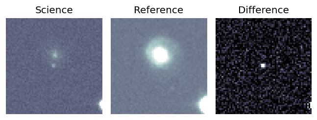
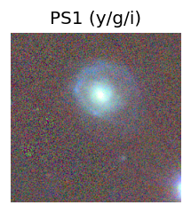
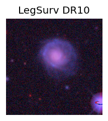
TESS: Sectors [45 46]
NED host (10 arcsec):Found 2MASX J09573227+1158383 (G, 7.6″); NED spec-z: z=0.0746 [zflag SLS]; peak abs mag = -19.69
PS1: 0 sources in 3 arcsec
LegacySurvey: 1 sources in 3 arcsec Closest: d = 1.33 arcsec, 35.3 deg (east of north) photoz=1.15 (68% bounds 0.26, 2.32), type=PSF peak abs mag (ext. corrected) = -26.5 (68% bounds -22.66, -28.37)
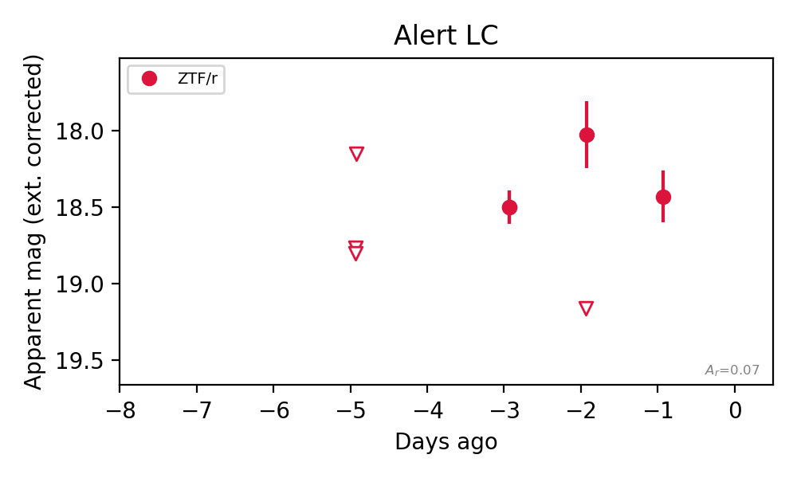
Rise Rate:
r: 0.73 mag/day
Fade Rate:
r: 0.66 mag/day
2. [ZTF] ZTF26abxsdlh (FBOT?) [Back to Top] [Share] [Trigger Swift] [Fritz Alert] [Fritz Source] [Lasair]RA, Dec: 94.74969, 8.35582 6h18m59.93s, 8d21m20.96sGalactic (l, b): 201.78643, -3.32241 ext(g-r) = 0.508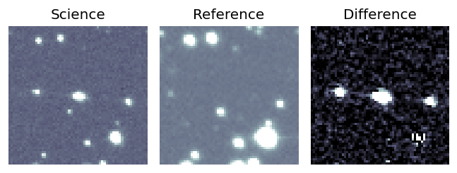
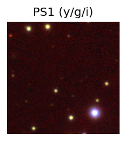

TESS: Sectors [ 6 33 87 111]
PS1: 1 source in 3 arcsec Closest: d = 1.47 arcsec photoz=0.98+/-0.11 peak abs mag = -29.21
LegacySurvey: 0 sources in 3 arcsec
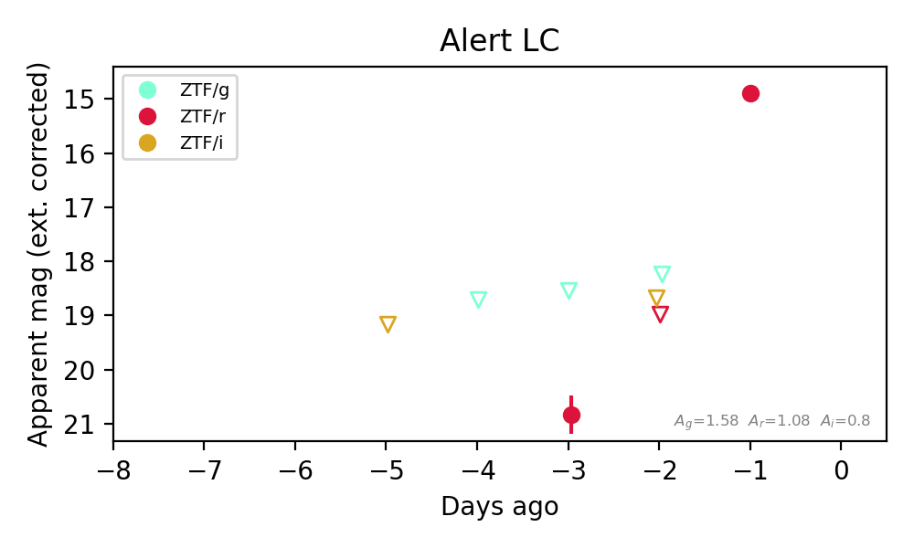
Extinction-corrected gr color:
From alerts: -2.29 +/- 99 mag
Rise Rate:
r: 4.09 mag/day
Fade Rate:
3. [ZTF] ZTF26abxsysn (FBOT?) [Back to Top] [Share] [Trigger Swift] [Fritz Alert] [Fritz Source] [Lasair]RA, Dec: 142.33853, 10.26077 9h29m21.25s, 10d15m38.78sGalactic (l, b): 222.40588, 39.64472 WARNING: -4.34 deg from ecliptic plane ext(g-r) = 0.039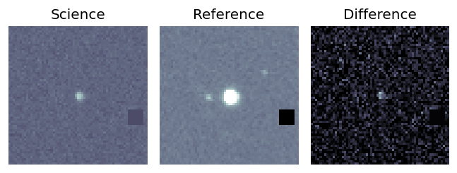
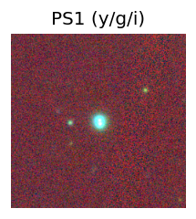
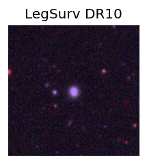
TESS: Sectors [45 46 72]
SDSS (<15 kpc):Found SDSS phot-z: z=0.03; peak abs mag = -17.85
NED photo-z only: WISEA J092921.89+101538.0 (*, 9.6″) z=0.0850 [zflag PUN] — not used for peak abs mag
PS1: 0 sources in 3 arcsec
LegacySurvey: 1 sources in 3 arcsec Closest: d = 0.29 arcsec, 188.8 deg (east of north) photoz=0.08 (68% bounds 0.02, 1.81), type=PSF peak abs mag (ext. corrected) = -19.61 (68% bounds -17.0, -27.62)
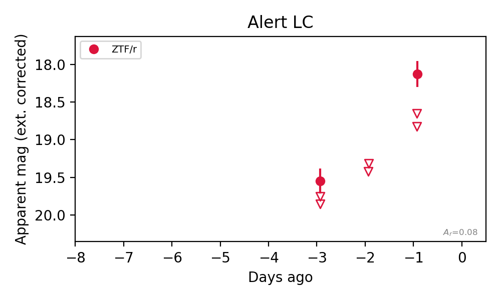
Rise Rate:
r: 1.28 mag/day
Fade Rate: